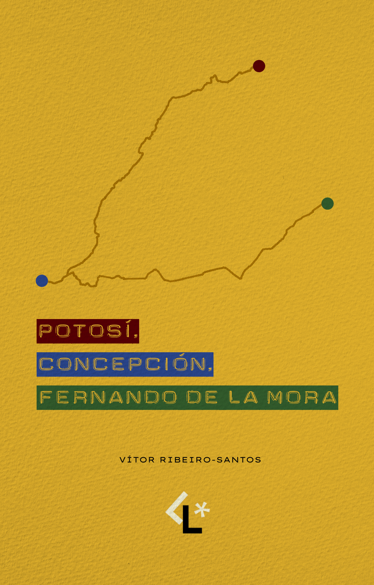

Pelo jogo nos movemos, nos pensamos, nos enunciamos.
Uma lâmpada acesa numa rua escura de Montevidéu.
Na rua Pedro Trápani, em Aires Puros, Montevidéu, uma lâmpada permanecia acesa sobre um bar que era a única casa com eletricidade da região. Vista de longe, no alto de uma colina, aquela luz reunia pessoas, sonhos e uma vontade enorme de difundir ideias.
Foi ali que nasceu um clube de futebol cujo nome fazia jus à sua origem: La Luz.
La Luz é o selo de futebol da Candeia Editorial. Seu nome se remete a esta história — é, literalmente, claro —, a uma viagem por bairros solitários, a um continente que escolheu um jogo como uma lente sobre o mundo, como uma bússola para caminhos ainda desconhecidos.
Aires Puros, Montevidéu · UruguaiEntre os muitos caminhos, um nos interessa de modo especial: o futebol. É daí que surge La Luz.
Pelo jogo nos movemos, nos pensamos, nos enunciamos. Um continente que escolheu um jogo como uma lente sobre o mundo, como uma bússola para caminhos ainda desconhecidos.

Vítor Ribeiro-Santos
Pré-venda abertaPotosí (Bolívia) → Concepción (Chile) → Fernando de la Mora (Paraguai). Agosto/2026.
Pré-venda →Bianca Muniz
Em breveLetreiros, placares, faixas: a linguagem visual que os estádios inventaram. Um olhar sobre a tipografia que ninguém encomendou mas todos reconhecem.
Agosto/2026
Fique de olho nas novidades.